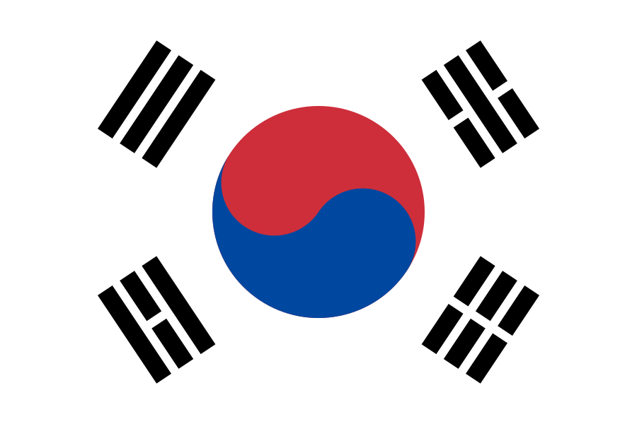

×

The flag's background is white, a traditional color in Korean culture.
Read More
The flag's background is white, a traditional color in Korean culture. White was common in the daily attire of 19th-century Koreans, and it still appears in contemporary versions of traditional Korean garments, such as the hanbok. The color represents peace and purity.
The circle in the middle is derived from the philosophy of um-yang (yin-yang in Chinese) and represents balance in the universe. The red half represents positive cosmic forces, and the blue half represents the opposing negative cosmic forces.
Together, the trigrams represent movement and harmony as fundamental principles. Each trigram (hangeul: 괘 [gwae]; hanja: 卦) represents one of the four classical elements,as described below: